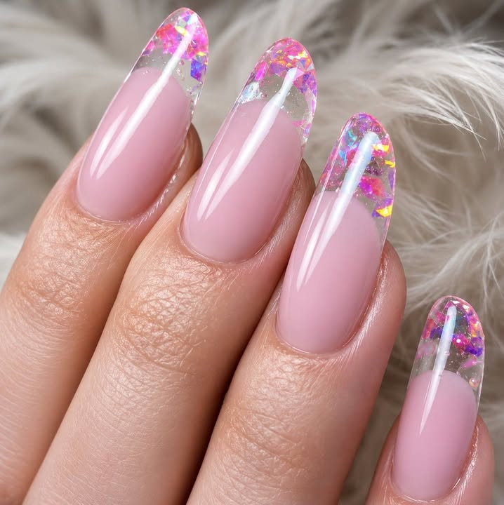

Unghii cu gel, gândite ca bijuterii.
La Angelique Nails, fiecare set pleacă lucios, îngrijit și croit pe mâna ta — de la nuanțe naturale, discrete, la finisaje sidefate care prind lumina. Manichiură, modelaj și design, cu răbdare și atenție la detalii.
Unghii îngrijite, făcute cu drag în Piatra Neamț.
Angelique Nails este un studio de unghii cu gel din Piatra Neamț, unde fiecare programare înseamnă timp doar pentru tine. Lucrăm curat, cu răbdare, ca setul tău să arate impecabil zi de zi.
Fie că îți dorești o nuanță naturală, discretă, un french clasic sau un design mai jucăuș, cu sclipici și vârfuri sidefate, punem accent pe formă, finisaj și rezistență — mâini îngrijite care rezistă până la următoarea programare.
Ne găsești cel mai ușor pe Facebook, unde postăm lucrări noi și unde te poți programa printr-un simplu mesaj.

Ce facem la Angelique Nails
Servicii de unghii cu gel și îngrijire, personalizate pe stilul tău. Prețurile actuale și disponibilitatea ți le confirmăm la programare.
Unghii cu gel
Construcție și modelaj cu gel, cu formă la alegere și finisaj lucios de durată — pentru mâini îngrijite care rezistă.
Manichiură & îngrijire
Pregătirea și îngrijirea cuticulelor, aplicare de culoare și un finisaj curat, ordonat — baza oricărui set frumos.
Design & nail art
French, ombré, sclipici, vârfuri sidefate sau modele delicate — alegem împreună un design pe placul tău.
Finisaje curate, nuanțe care prind lumina.
Ne place echilibrul dintre elegant și modern: baze roz pudră, discrete, împreună cu vârfuri sidefate care sclipesc subtil. Fiecare set este gândit pentru forma și lungimea potrivite ție.
- Formă almond, migdală și lungimi la alegere
- Finisaj lucios, rezistent între programări
- Design personalizat, de la natural la statement
Ne urmăresc peste 1.400 de persoane
Pe pagina de Facebook postăm lucrări noi și primim mesaje de la cliente din Piatra Neamț și împrejurimi.
Ține pasul cu noile modele
Cele mai recente seturi de unghii cu gel, idei de design și disponibilitatea pentru programări le anunțăm mereu pe pagina noastră. Dă-ne un like și scrie-ne un mesaj când ești gata să te programezi.
facebook.com/nailschicbyangeliqueNe găsești în Piatra Neamț
Locație
Piatra Neamț, județul Neamț
Adresa exactă ți-o comunicăm la programare.
Program
Programările se fac printr-un mesaj pe Facebook.
Programări
Angelique Nails este un studio local din Piatra Neamț. Detaliile de contact și prețurile ți le confirmăm direct, prin mesaj.